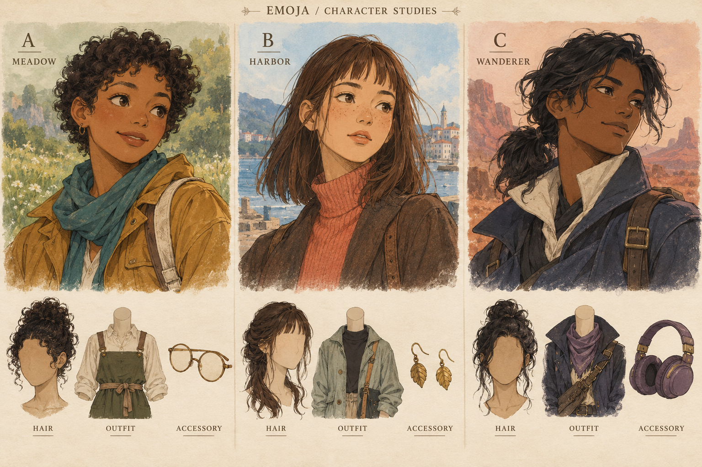

Pick your favorite
Three artwork concepts, with sample hair, outfits, and accessories. These are previews for choosing an art direction.
Open the full picture · Back to Emoja


Three artwork concepts, with sample hair, outfits, and accessories. These are previews for choosing an art direction.
Open the full picture · Back to Emoja
